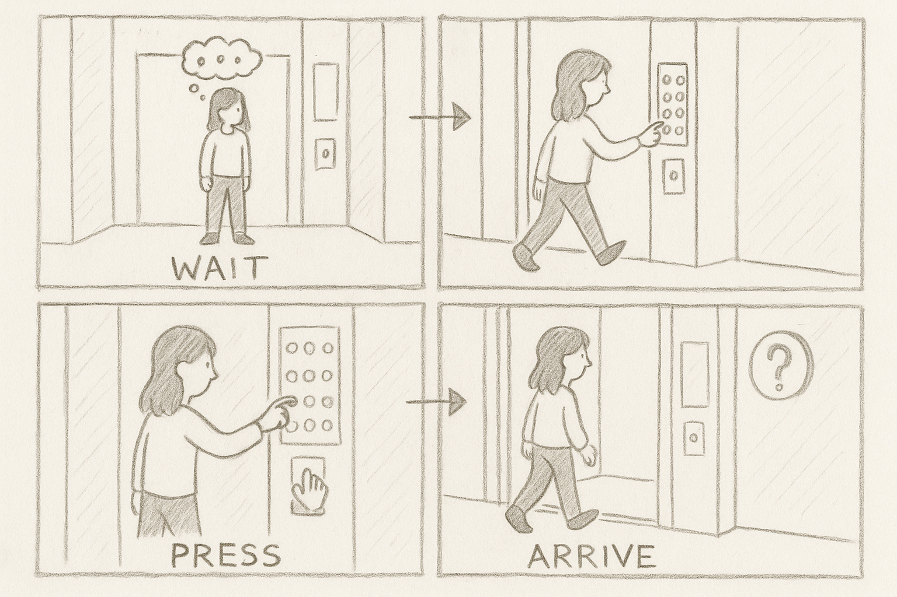

Personas & Storyboarding
Empathizing with elevator users to design better vertical experiences.
This project aimed to understand real-life user interactions with elevators, a common yet often overlooked public interface. Through contextual inquiry, interviews, and storyboarding, I examined how people navigate elevators and the pain points they encounter along the way.
Observations
I observed and interviewed three users. Common behaviors included:
- Uncertainty when the elevator interface offered multiple sets of buttons (e.g., lobby panel vs. inside)
- Confusion about confirmation when a button press registered (no sound/lighting feedback)
- Hesitation when sharing an elevator with others or during crowded use
Interview questions included:
- What’s the first thing you look for when you approach an elevator?
- Have you ever had trouble getting an elevator to respond?
- What frustrates you most about using elevators?
Most responses centered on lack of feedback, unclear signage, and anxiety about missing their floor or pressing the wrong button.
Personas
1. Jordan – The Anxious Newcomer
- Think: “What if I press the wrong button?”
- Feel: Nervous in shared elevator spaces, easily overwhelmed
- Say: “I wish it gave a sound or something when I press!”
- Do: Double-presses the button and checks signage multiple times
Description: Jordan is a college student new to campus housing and unsure of elevator etiquette or norms...
2. Denise – The Busy Professional
- Think: “Why is this taking so long?”
- Feel: Frustrated by inefficiency and unclear UX
- Say: “Why are there two panels—am I supposed to use both?”
- Do: Rapidly presses close door, glances at watch often
Description: Denise is an office worker who uses the elevator system multiple times a day...
Storyboard
A day in the life of Jordan navigating the dorm elevator
Reflection
I learned that even mundane interfaces like elevators contain emotional tension—especially for newcomers or people with accessibility needs. Designing for feedback, clarity, and social comfort can go a long way.
I’d like to explore UI alternatives like light and sound indicators or even voice-assisted guidance for greater confidence.